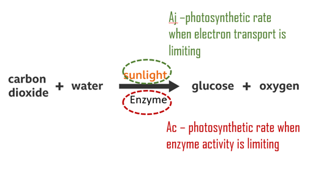
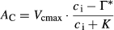
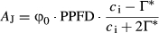
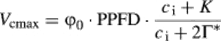
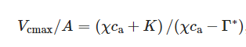
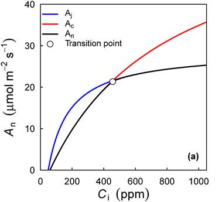
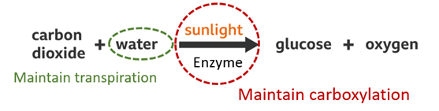

To explain optimality theory
This document is created for Yadvinder and Imma to communicate optimality principles in a nutshell, please refer back to the original paper if I confused you anywhere. Please let me know if I explained anything wrong as I just learned these myself…
As this document is designed for you, I did not explain any notation after equations, but only attached a list of math abbreviation at the end…
The overall idea is that, not to directly draw correlation between GPP and environment controls. We estimated photosynthetic traits (which is the key inputs for Farquhar photosynthesis model that has been widely used for modelling GPP) based on a given environment. This is done on station (or stand) level (Farquhar, von Caemmerer and Berry, 1980). (Farquhar model was not explained here, but if you want more info, pls check out two links above and (Duursma, 2015))
The timespan for this analysis is rather long (years to decade), as mentioned in (Prentice et al., 2014) :
“Biochemical properties of leaves, and hydraulic properties of stems, were assumed fixed over the time scale of interest (principally the diurnal cycle)”
There are basically two principles here:
(1) Coordination hypothesis (which give a prediction of Vcmax) (Maire et al., 2012) (Chen et al., 1993) (Haxeltine and Prentice, 1996)
(2) Least cost hypothesis (Which give a prediction of χ) (Prentice et al., 2014)
These two hypothesis were taken together by (Wang, Prentice, Davis, et al., 2017) (Wang, Prentice, Keenan, et al., 2017)

The coordination hypothesis states that investment in Rubisco is matched to average light conditions (as shown in the above diagram), so that the Rubisco‐limited and electron transport‐limited rates of photosynthesis are approximately equal. In order word:
Equation (1) 
Equation (2) 
In other word, Equation (1) equal to (2), Ac = Aj = A which give:
Equation (3) 
Equation (4) 
Also, a graphic explanation for above equations: plants are working around the transition point as shown in the below graph,

(this figure is drawn in this way because An is equal to the smaller one of Ac and Aj) (Please check the introduction part of (Duursma, 2015) for more information)

A general microeconomic optimisation criterion concerns investments in two or more resources required to manufacture a product. Here, the product is photosynthate, and the resources are the photosynthetic apparatus (with costs assumed proportional to Rubisco carboxylation capacity, Vcmax, at a standard temperature, and approximately proportional to Narea) and the transpiration pathway (with costs assumed proportional to the maximal transpiration rate, E). Wright et al. (2003) proposed the existence of an optimum rate of investment in transpiration and photosynthetic capacity, dependent on the ratio of their costs, which would achieve a given rate of net assimilation at least total cost. This analogy requires that the resources are substitutable, e.g. that plants can compensate for high water costs in dry climates by keeping stomata relatively closed while increasing investment in photosynthetic capacity, maintaining a given level of carbon assimilation at reduced ci. Wright et al. (2001) noted that this form of resource substitution constitutes a widespread, previously overlooked mechanism of drought tolerance in plants.
We hypothesised that plants minimise Cost = a.E/A + b.Vcmax/A where a is the (carbon) cost of maintaining the transpiration stream required to support assimilation at a rate A under normal daytime conditions, and b is the cost of maintaining photosynthetic proteins at the level required to support assimilation at the same rate. Vcmax, E and A here are molar flux densities (mol CO2 or H2O per unit leaf area and time). Note that whereas both E and A can vary rapidly (minutes), Cost expresses the maintenance requirements for the capacities for maximum rates of transpiration and photosynthesis. These vary much less rapidly (weeks to months).
Previous analyses have often focused on predicting gs, but it is conceptually simpler to predict χ. The two are related by Fick's law, gs = (A/ca)/(1 − χ). a.E/A and b.Vcmax/A represent the ‘unit costs’ of transpiration and carboxylation respectively. They respond in opposite ways to a change in χ, leading as we will show to the existence of a minimum in Cost that depends on the relative magnitudes of a and b.
|
Quantity |
Unit |
|
|
Atmospheric CO2 partial pressure |
Ca |
Pa |
|
Atmospheric pressure |
Patm |
kPa |
|
Day respiration |
Rd |
μmol m–2 s–1 |
|
Effective Michaelis-Menten coefficient of Rubisco |
K |
Pa |
|
Elevation |
z |
m |
|
Incident photosynthetic photon flux density |
Iabs |
μmol m–2 s–1 |
|
Intercellular CO2 concentration |
ci |
Pa |
|
Intercellular O2 concentration |
O |
Pa |
|
Intrinsic quantum efficiency of photosynthesis |
φ0 |
mol mol–1 |
|
Latitude |
δ |
° |
|
Leaf mass per area |
LMA |
g/m² |
|
Leaf nitrogen per area |
Narea |
g/m² |
|
Leaf nitrogen per mass |
Nmass |
mg/g |
|
Leaf phosphorus per area |
Parea |
g/m² |
|
Leaf phosphorus per mass |
Pmass |
mg/g |
|
CO2 compensation point |
Γ* |
Pa |
|
Leaf-to-air vapour pressure deficit |
D |
kPa |
|
Marginal carbon cost of water |
λ |
[–] |
|
Maximum rate of carboxylation |
Vcmax |
μmol m–2 s–1 |
|
Maximum rate of carboxylation at 25˚C |
Vcmax25 |
μmol m–2 s–1 |
|
Maximum rate of electron transport |
Jmax |
μmol m–2 s–1 |
|
Maximum rate of electron transport at 25˚C |
Jmax25 |
μmol m–2 s–1 |
|
Mean daily maximum temperature |
Tmax |
℃ |
|
Mean daytime air temperature |
Tg |
℃ |
|
Mean daily minimum temperature |
Tmin |
℃ |
|
Michaelis-Menten coefficient of Rubisco for carboxylation |
KC |
Pa |
|
Michaelis-Menten coefficient of Rubisco for oxygenation |
KO |
Pa |
|
Minimum water potential |
Ψmin |
Pa |
|
Net photosynthesis at light saturation |
Asat |
μmol m–2 s–1 |
|
Observed maximum rate of carboxylation at 25˚C |
Vcmax25[observed] |
μmol m–2 s–1 |
|
Predicted maximum rates of carboxylation at 25˚C |
Vcmax25[predicted] |
μmol m–2 s–1 |
|
Ratio of intercellular to ambient CO2 pressure |
χ |
/ |
|
Ratio at 25˚C of unit costs for maintaining capacities for
carboxylation and transpiration |
β |
/ |
|
Solar declination |
φ |
° |
|
Temperature-dependent saturated vapour pressure |
es |
kPa |
|
Transpiration rate |
E |
μmol m–2 s–1 |
|
Actual vapour pressure of water at sea-level |
ea |
kPa |
|
Viscosity of water relative to its value at
25˚C |
η* |
[–] |
|
PPFD is the photosynthetic photon flux
density |
PPFD |
|
|
Stomata conductance to H2O |
gs |
|